Research Projects
 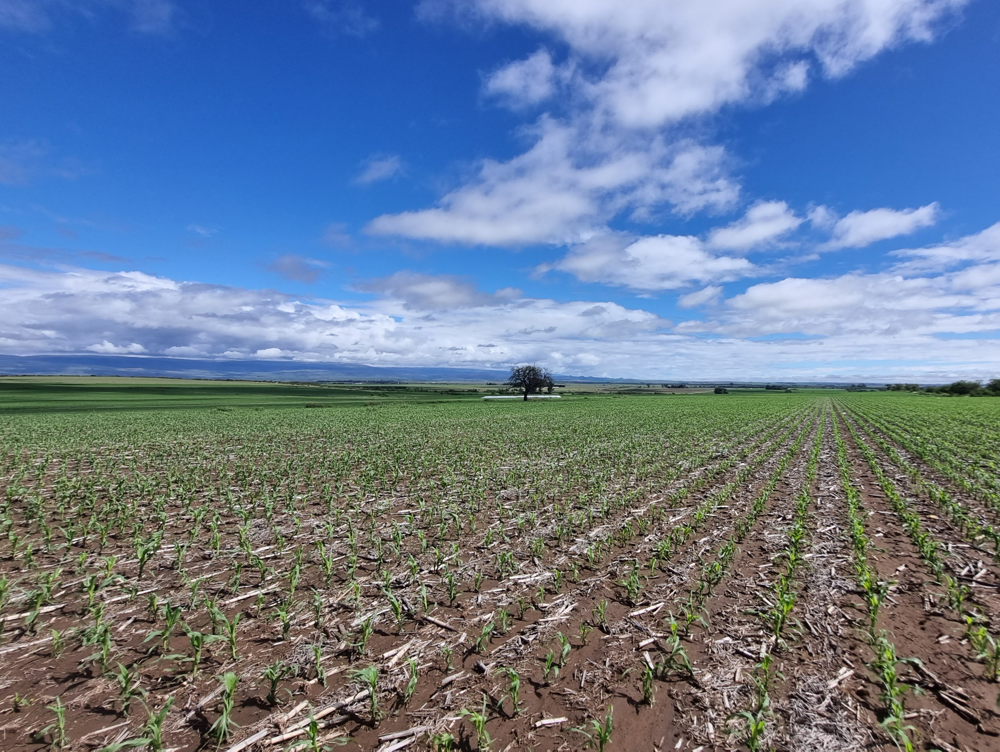
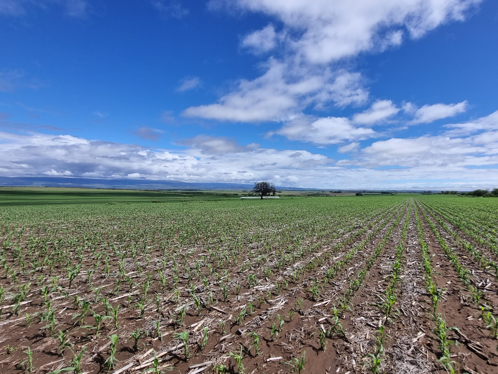
 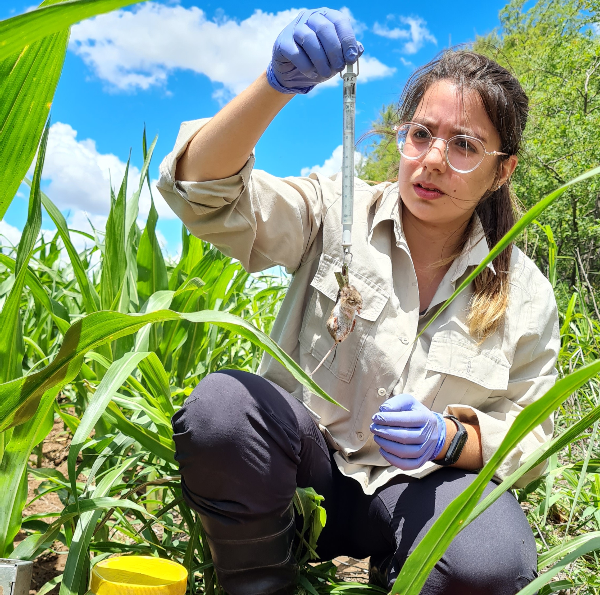
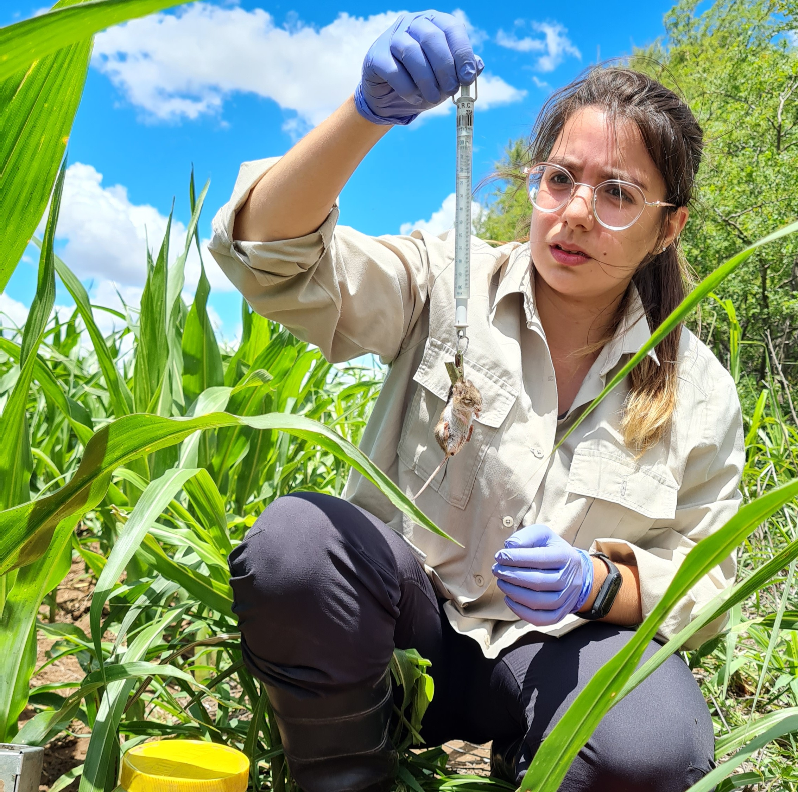
Ecosystem Services
Weed seed predation by rodents
This project explored how native rodents contribute to weed control in the agroecosystems of central Argentina. The research focused on herbicide-resistant species and how local variables affect seed removal rates.
Key Results: Removal is higher in high-quality field borders (borders with high vegetation coverage and plant richness),
suggesting that maintaining and enhancing natural semi-natural patches of vegetation can boost this ecosystem service.
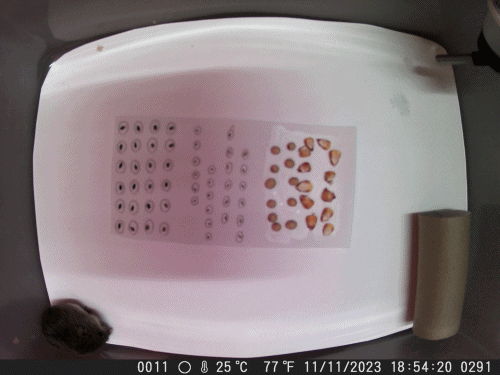
Foraging preferences
Seed traits and rodent choices
This research aimed to study how seeds' physical and chemical traits influence the choices of different rodent species through cafeteria experiments. Moreover, seed fate after consumption was determined, i.e. seed dispersal via endozoochory vs seed predation.
Key Results: Rodents showed marked seed preferences. Seed volume, fat percentage, and mineral contents were the main drivers behind rodent choices. Rodents are seed predators of the studied seeds.
Foraging behaviour influences plant population, emphasizing the potential role of rodents in the biological control of weeds.
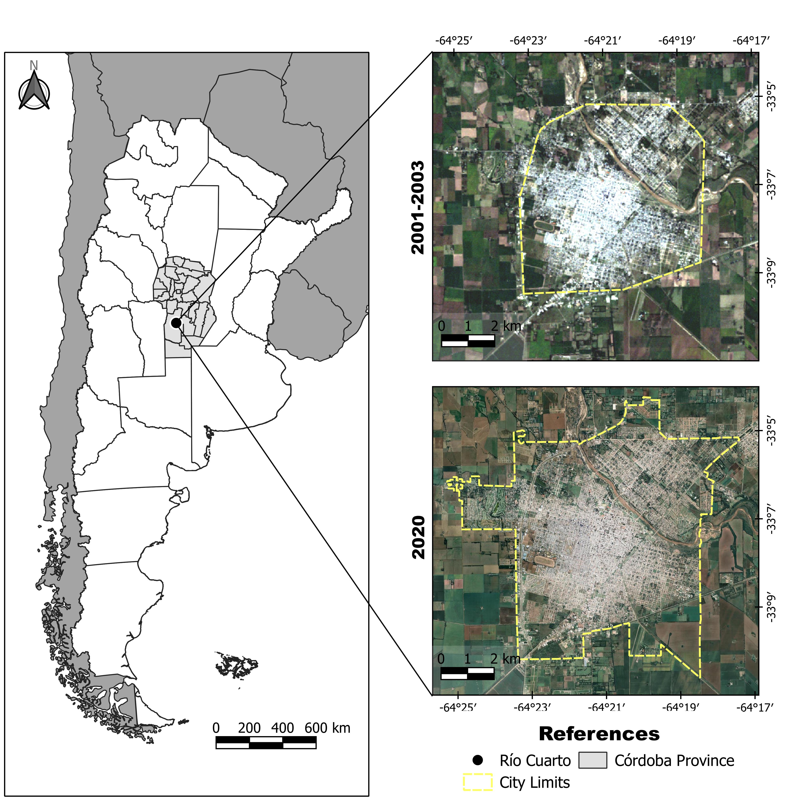
 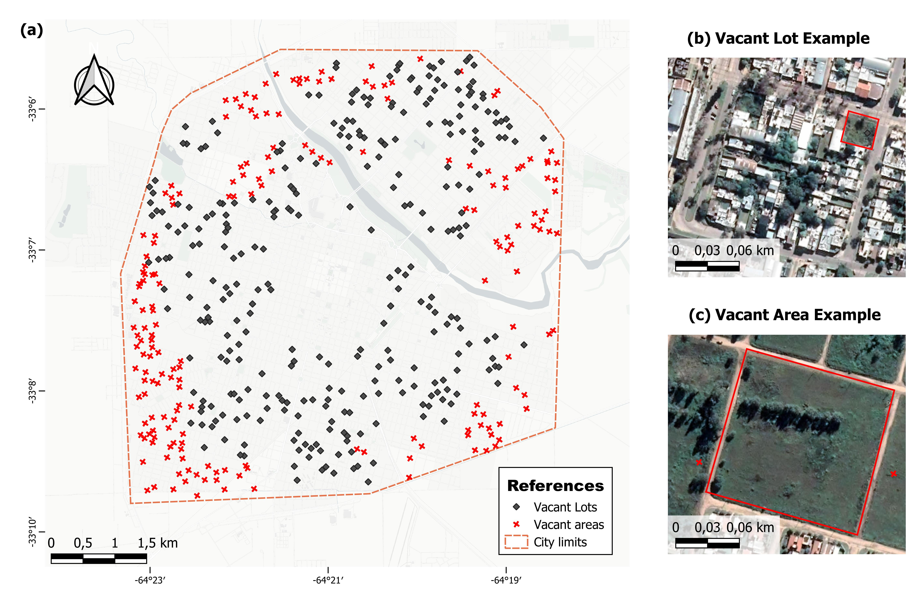
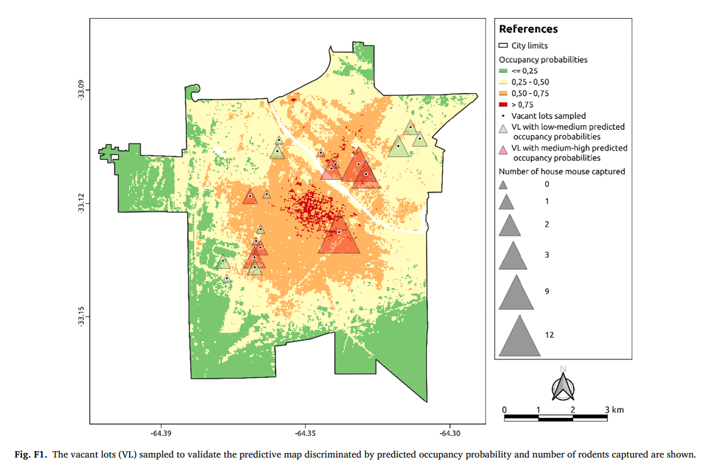
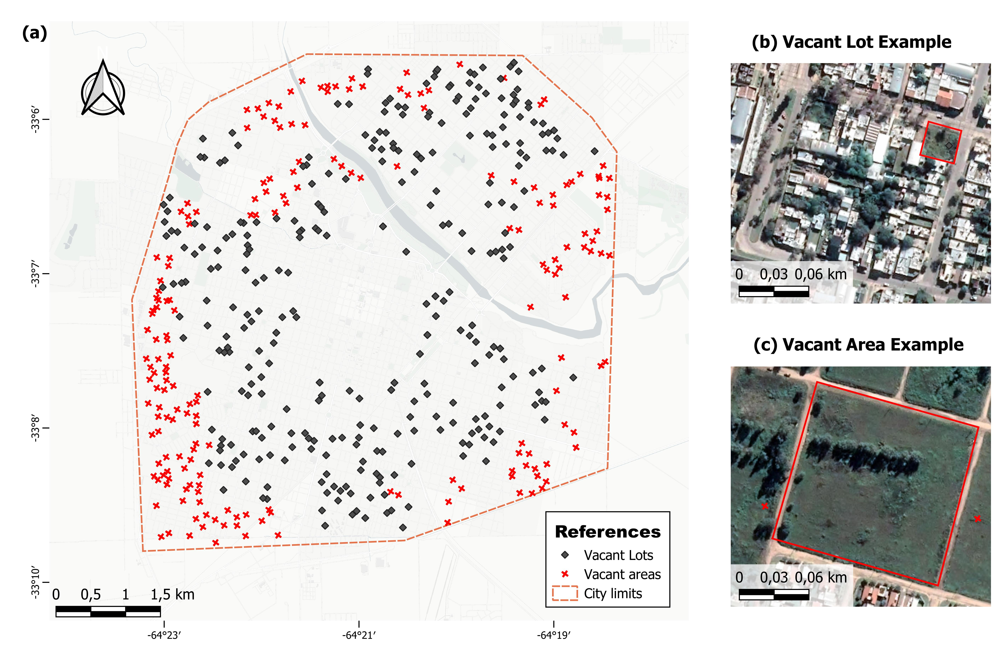
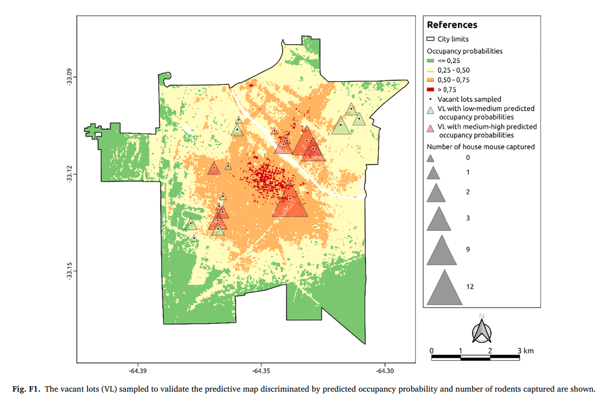
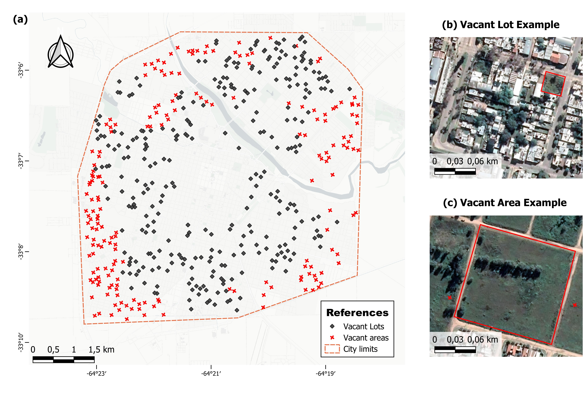
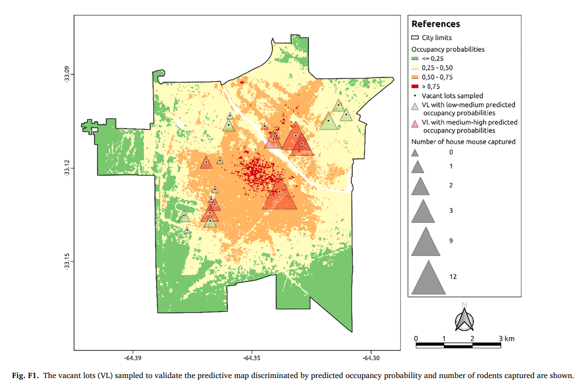
Environmental change
Urban occupancy of Mus musculus
This work aimed to estimate occupancy probabilities of Mus musculus (house mouse) as a function of environmental and anthropogenic variables to explore the differences in occupancy according to temporal changes of urban growth.
Key Results: Mus musculus expanded its range of distribution in the city, accompanying the increase in urbanization of the last 20 years.
Considering the importance of M. musculus as an indicator of environmental degradation in urban areas, this tool can help prioritize resources and direct control policies to higher-risk areas.